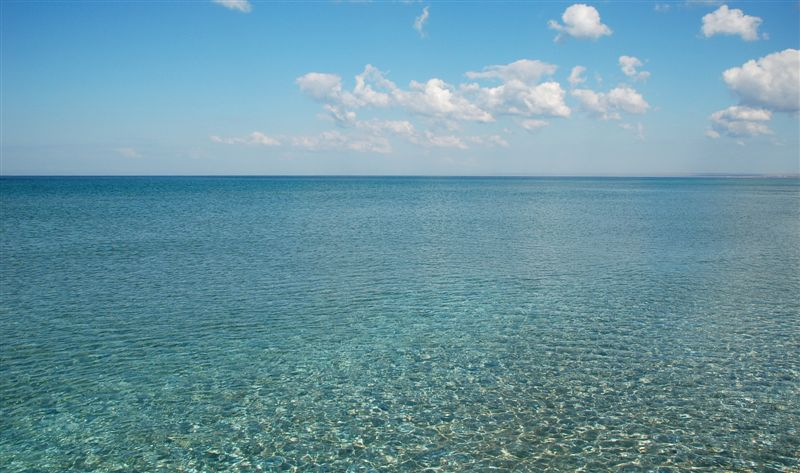

Дорогие отпускники, и все те, кто ими скоро станет!
Если вы сейчас находитесь на этом сайте, то скорей всего уже давно подбираете в интернете место для отдыха в Краснодарском крае. Можете больше не мучиться и не сравнивать предложения на сотнях сайтах, посвящённых отдыху на курортах Краснодарского края. Мы это всё давно сделали за вас.
Нами были выбраны нормальные курортные посёлки и затем в них лучшие гостиницы. Мы не рассматривали предложения, где безумные цены или такие же хозяева. А отобрали только те, за которые нам не будет стыдно перед вами.
Отдых в Краснодарском крае - занятие ответственное и подойти к нему надо с умом. Прежде всего, надо выбрать городок, который бы соответствовал именно вашим представлениям о нормальном отдыхе.
На самом деле всё очень просто. Чем крупнее населённый пункт, тем дороже питание и жильё. Зато много аттракционов, магазинов и кафешек. Если посёлок небольшой, то в нём тишина и спокойствие. Цены дешевле, но развлечений совсем мало. А так, во всём остальном курорты Краснодарского края ничем друг от друга не отличаются. Солнце светит также, горы рядом, а море оно везде одинаковое.
После того, как вы определитесь с курортным посёлком для отдыха в Краснодарском крае, подбирайте себе там жильё. Обращайте внимание на описание гостиниц, чтобы понять – где удобнее отдыхать с детьми, где с любимыми, а где лучше и одному.
Кроме того, ознакомьтесь с отзывами людей, которые в них уже отдохнули.
